<meta charset="UTF-8">
<script src="javascript/mustache.min.js"></script>
<script src="//ajax.googleapis.com/ajax/libs/jquery/1.10.2/jquery.min.js" ></script>
<script id="content" type="text/html" charset="UTF-8">
	<div id="sidebar">
	    	
		<div class="block">
		    <div class="overline"><h2>Reviews</h2></div>		
			<ul class="inline">
				<p><a href="http://www.wired.com/gadgetlab/2012/07/hands-on-with-microsoft-outlook-com/">The Outlook.com design is clean and refreshing. -Wired</a></p>
				<p><a href="http://www.theverge.com/2012/7/31/3201345/outlook-com-hotmail-preview-features-screenshots">The change is a fairly massive one, with a fresh and clean interface. -The Verge</a></p>
                <p><a href="http://thenextweb.com/microsoft/2012/07/31/microsoft-launches-outlook-com-a-clean-fresh-take-on-webmail-that-puts-it-back-in-the-game/">Spend an hour in Outlook, and Gmail feels chaotic when you return. -The Next Web</a></p>
                <p><a href="http://gizmodo.com/5930358/microsoft-did-the-impossible-the-new-hotmail-is-fantastic">Simple, clear, clean—it looks like an expertly assembled IKEA drawer. -Gizmodo</a></p>
			</ul><!--END ul-->
		</div><!--END block-->
		
		<div class="block sidelist">
		    <div class="overline"><h2>What I did</h2></div>			
	    	<ol style="clear:left">
            <li>Defined the design goals for chat</li>
            <li>Created personas, storyboards, wireframes and simple prototypes</li>
            <li>Incorporated user study findings</li>
            <li>Created pixel perfect photoshop mocks</li>
            <li>Provided detailed instructions to developers</li>
            <li>Dogfooded the product and filed bugs</li>
            </ol>	
         
		</div><!--END block-->
	
		<div class="block">
		    <div class="overline"><h2>Related Projects</h2></div>
           	<div class="relatedProjects">
			<ul>						
											
				<li>
					<a href="cofr.html"></a>
					<a href="cofr.html">Certification for Flight Readiness</a>		
				</li>
						
				<li>
					<a href="recipemanager.html"></a>
					<a href="recipemanager.html">Recipe Manager</a>		
				</li>
                <li>
					<a href="funq.html"></a>
					<a href="funq.html">FunQ</a>		
				</li>
                
                <!--
                <li>
					<a href="walk.html">
					<a href="walk.html">Park Social</a>		
				</li>
                -->
              
			
			
				
			</ul><!--END ul-->
            </div>
			
		</div><!--END block-->
		
	</div><!--END sidebar-->

	<div id="inner-content">
	
	<div class="overline"><h2>Messaging for Outlook.com</h2></div>
	
<p>I designed Messaging (chat) for <a href="http://www.outlook.com">Outlook.com</a>, which replaced Hotmail and had 420 million users as of February 2013. Below I describe the principles that guided my design decisions.</p>

<div class="before">


<div class="before">
<h5>Before</h5>
</div>
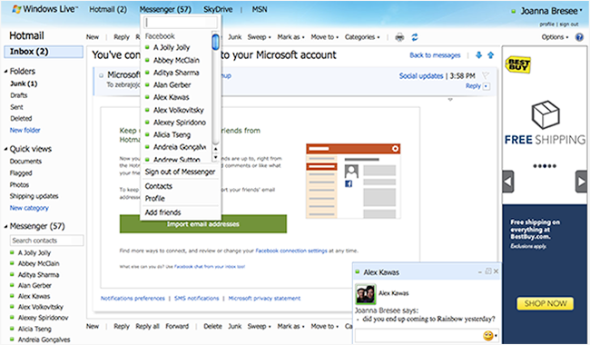
<h5>After</h5>
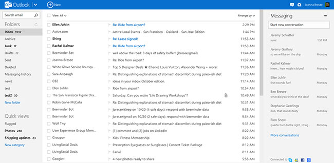
</div>


<div class="designsection">


<h2>3 principles that guided my design decisions</h2>
<h4>1. Be great at something</h4>
<div class="before">
<h5>Before</h5>
</div>
<p>The Hotmail landing page supported many scenarios, but was not clearly great at one thing. You could view mail, see social updates, read MSN news, chat, or see the weather.</p>


<div class="before">
<h5>After</h5>
</div>
<p>I designed Messaging in Outlook.com to be in a collapsible pane, which supplements mail without adding distracting clutter. Outlook.com is great at mail.</p>
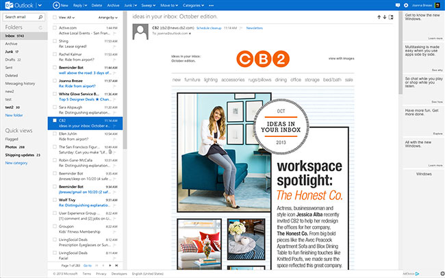

<div class="designsection">
<div class="designsection">

<p>A toast appears when you get an incoming message, which you can ignore. Clicking on the toast opens the Messaging pane. It does not overlap your content.</p>
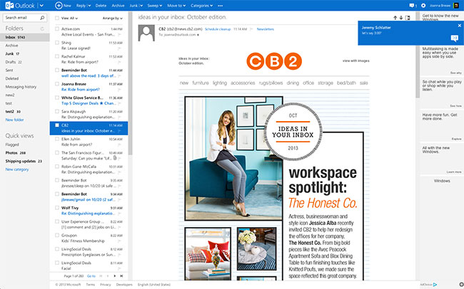

</div>
<p>The collapsible pane allows Messaging to be available on every Microsoft web application and fit conversations on the grid. Gizmodo commented on the design:</p>

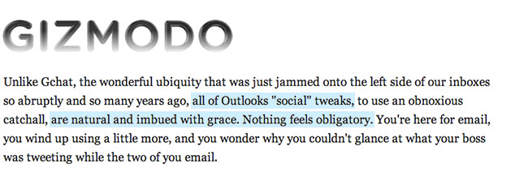
</div>
<div class="designsection">
<h4>2. Reduce Clutter</h4>
<div class="before">
<h5>Before</h5>
</div>

<p>Hotmail had multiple entry points for accessing your contacts.</p>
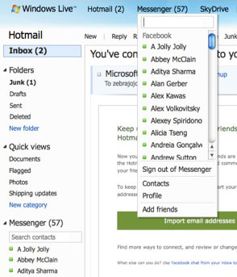

<div class="before">
<h5>After</h5>
</div>
<p>I created a single entry point, which reduced clutter an increased confidence. Users no longer need to decide which method they should use to access the contact list.</p>
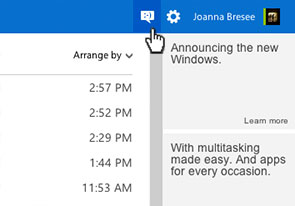
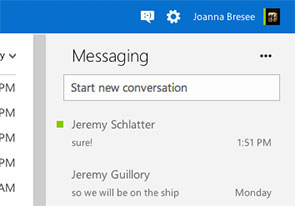

<div class="before">
<h5>Before</h5>
</div>
<p>Hotmail displayed contacts alphabetically. My list included over 200 online contacts.</p>
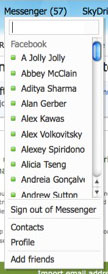

<div class="before">
<h5>After</h5>
</div>
<p>Messaging uses a list of recent conversations to resume conversations, which reduces clutter by showing the most relevant contacts.</p>
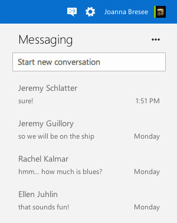
<div class="designsection">

<p>The steps that I and other designers took to reduce clutter in the new Outlook.com was noted in many articles, including this Verge article:</p>

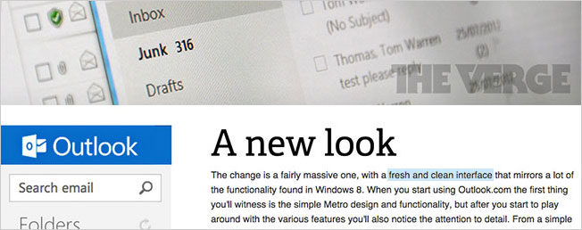
</div>
</div>
<div class="designsection">

<h4>3. Align with suite of applications</h4>
<p>Messaging exists in the context of other Microsoft web applications. I worked with developers to ensure that type baselines aligned across pages to anchor the Messaging content.</p>
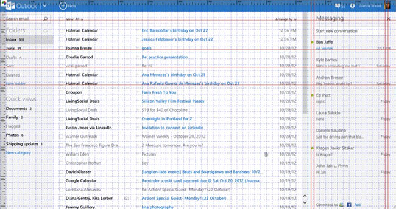

</div>
</div>
							
	</div><!--END inner-content-->
</script>
<script>
var data = {"web":true, "content": $('#content').html()};
$.get("template.html", function(template) {
    document.write(Mustache.render(template, data));
});
</script>